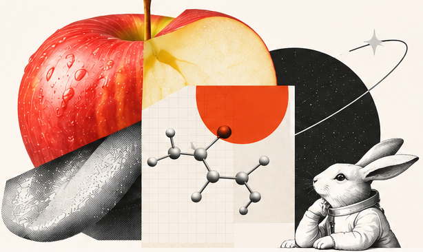
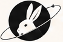

FEATURED QUESTIONS 01 / 05
우리가 아는
‘맛’은 정말
음식의 맛일까?
같은 음식을 먹어도 사람마다 다르게 느끼는 이유, 맛은 혀에서만 느껴지는 걸까?

From the
Bookshelf
지금, Odd Orbit이 고른
읽기 좋은 과학책
Editor’s
Curations
편집자의 시선으로 고른,
지금 읽기 좋은 과학책 큐레이션

Odd Orbit같은 음식을 먹어도 사람마다 다르게 느끼는 이유, 맛은 혀에서만 느껴지는 걸까?

지금, Odd Orbit이 고른
읽기 좋은 과학책
편집자의 시선으로 고른,
지금 읽기 좋은 과학책 큐레이션